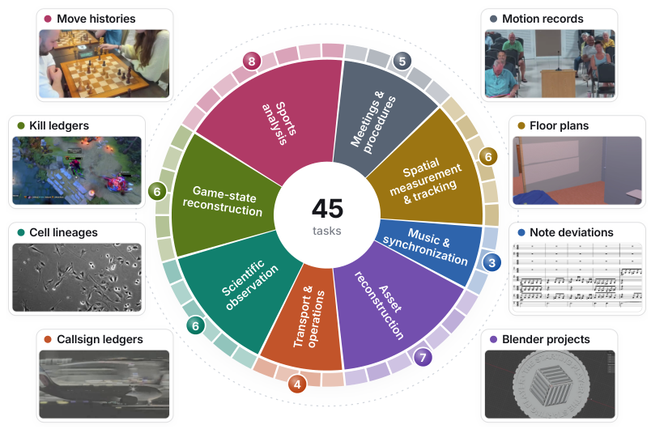
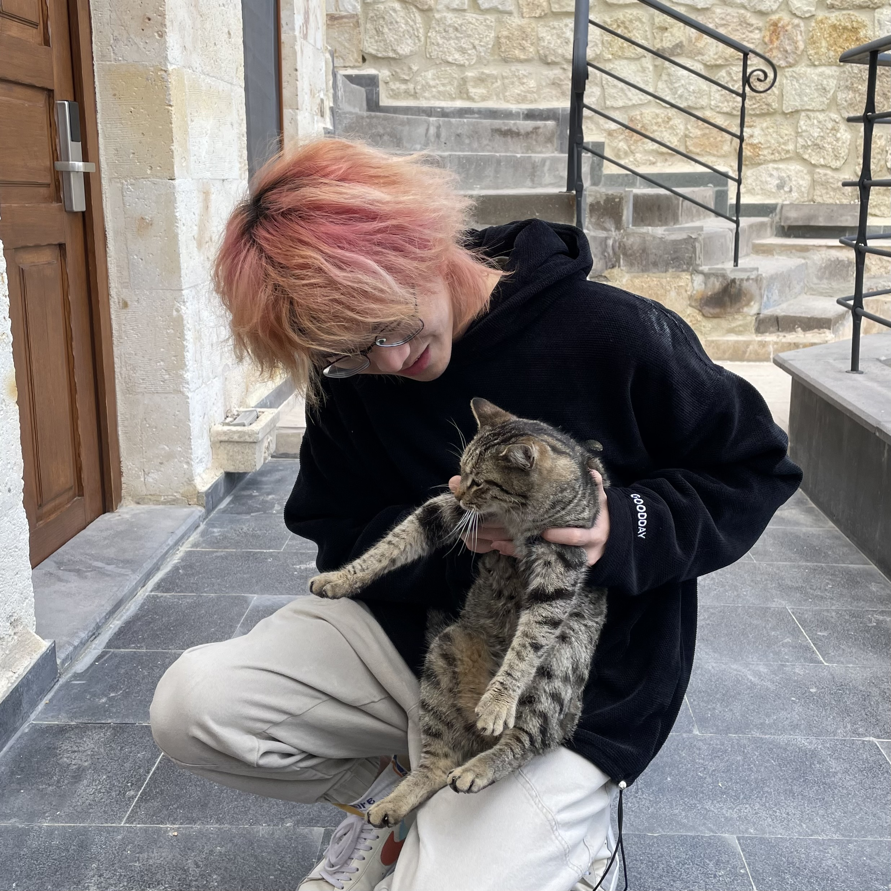
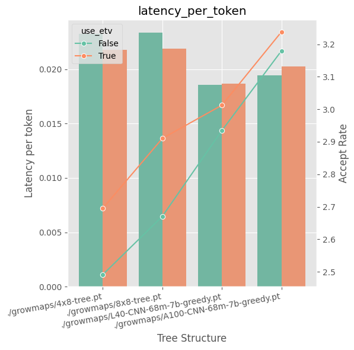
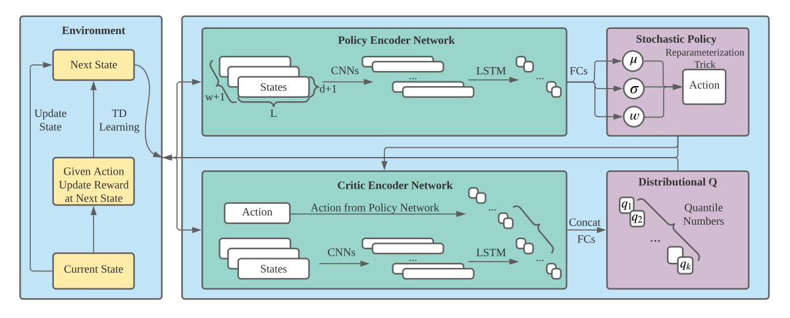

AgenticVBench-Omni: Evaluating Omnimodal Agents on Economically Valuable Work
Evaluating whether omnimodal agents can complete long-horizon professional tasks.
Worked on agent evaluation and failure analysis in Harbor.
|
 |
Pin (Campion) QianCurrently, I am a Research Engineer at Meta, working on in-house post-training as a service in MSL Infra, with a focus on agentic reinforcement learning. I am interested in how agents learn from interaction and reliably complete long-horizon tasks. Previously, I worked on synthetic data at Meta and game AI at Tencent. I received my M.S. in AI Engineering from Carnegie Mellon University. |
|
Carnegie Mellon University Aug 2023 - Dec 2024 M.S. in AI Engineering, Electrical and Computer Engineering |
|
University of Liverpool Sep 2019 - Jun 2023 B.S. in Computer Science |
|
Meta Feb 2025 - Present Research Engineer, MSL Infra
Machine Learning Engineer, Core Ads Growth
Machine Learning Engineer Intern, Core Ads Growth May 2024 - Aug 2024
|
|
Tencent Jul 2022 - Oct 2022 Machine Learning Engineer Intern, Game AI Research Center
|

Evaluating whether omnimodal agents can complete long-horizon professional tasks.
Worked on agent evaluation and failure analysis in Harbor.

Prompt-adaptive token trees for more efficient LLM decoding.
Explored dynamic tree construction and enhanced tree verification.

Risk-aware stochastic policies for portfolio optimization.
Worked on environment and reward design, and stochastic policy evaluation.